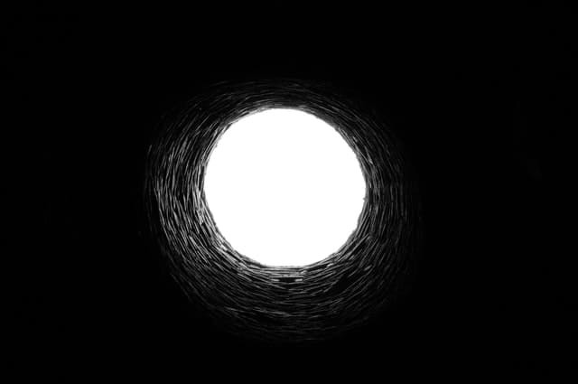
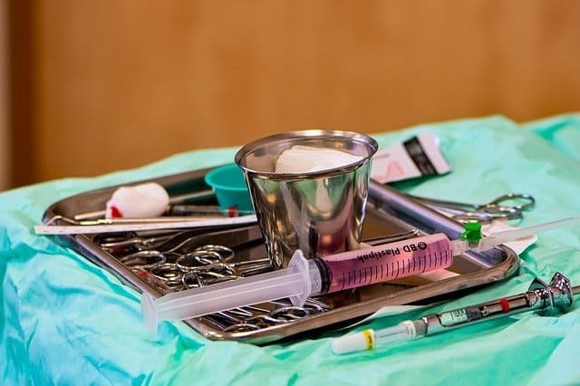

先天性耳瘻孔の鍼灸
生まれつき耳の付け根付近に小さな穴がある状態です。感染による腫れや膿がある場合は耳鼻科・皮膚科受診が最優先で、患部への刺激は避けます。
まず知っておきたい要点と施術方針
先天性耳瘻孔は、胎児期に外耳が形成される過程でパーツの癒合にわずかな隙間が残ることで生じる先天的な小さな穴（皮下の管腔構造）で、遺伝的要因も強いとされます。無症状であれば治療不要なことも多い一方、自然に塞がることはなく、細菌が侵入すると腫れ・痛み・膿瘍を引き起こします。感染時は耳鼻咽喉科や皮膚科で抗生物質や排膿処置を受け、感染を繰り返す場合は外科的摘出が検討されます。（公式解説）
このようなお悩みはありませんか？
- ✓耳の前や付け根付近に小さな穴やくぼみがある
- ✓穴の周りに汗や垢が溜まり、臭いや透明な分泌物が気になる
- ✓穴の周囲が赤く腫れて痛みやかゆみ、膿が出てきた
- ✓感染を繰り返しており、手術や今後のケアについて知りたい
当院の施術アプローチ
院長YouTube解説・関連動画
耳瘻孔の多くは遺伝的な要因が強い

耳瘻孔ができる原因は、胎児の耳が作られるとき、いくつかある耳になるパーツがきちんと合わず隙間ができたことであると考えられています。
耳瘻孔の多くは遺伝的な要因が強いということも言われています。そのため、両親に耳瘻孔がある場合、その子どもにも耳瘻孔が起こる可能性が高いです。
耳瘻孔に炎症が起きる原因は、細菌感染です。
先天性耳瘻孔は、耳の前に位置する小さな穴や窪みとして現れる先天的な異常です。この状態は通常無害で、特に改善を必要としない場合が多いですが、以下の要因によって発生すると考えられています。
遺伝的要因:先天性耳瘻孔は遺伝的な要素を持つことが多く、家族歴がある場合により頻繁に発生する可能性があります。
胚発生中の異常:耳瘻孔は胚発生の初期段階で、外耳が形成される過程で起こる異常により発生するとされています。特に第一鰓弓と第二鰓弓の間の発達において、正常な形成過程が妨げられることが原因とされます。
遺伝的症候群:一部の遺伝的症候群、例えばブランチオオトレナル症候群などは、先天性耳瘻孔を伴うことがあります。
先天性耳瘻孔は、ほとんどの場合、無症状であり、多くの人々はそれを持っていることに気づかないこともあります。しかし、耳瘻孔から分泌物が出たり、繰り返し感染する場合は、外科的な除去が必要になることがあります。耳瘻孔の存在に気づいた場合や問題が発生した場合は、耳鼻咽喉科医に相談することが推奨されます。
耳瘻孔の穴に汗や垢がたまると臭い匂いがする
耳瘻孔の穴に汗や垢がたまると臭い匂いがします。さらに、穴から分泌液が出る症状が見られます。
細菌が入って細菌に感染した場合に起きる症状は、穴の周りの腫れや膿です。痛みや痒みなどを感じることもあります。
何度も感染を繰り返すと慢性化していきます。すると、穴の周りがただれて固くなります。周りに膿瘍ができることや、顔面に感染が広がることもあります。
基本的に耳瘻孔で炎症が起こった場合にはこのような症状が現れますが、中には無症状の人もいます。
先天性耳瘻孔は、通常は無症状であるため、多くの場合、目立った症状はありません。しかし、以下のような症状が生じることがあります。
小さな穴や窪み:耳の前、耳介の上方、または耳介に接する領域に小さな穴や窪みが見られます。これは耳瘻孔の最も典型的な徴候です。
分泌物:瘻孔から時折、透明な液体や膿が分泌されることがあります。これは耳瘻孔が感染していない場合でも起こることがあります。
感染:瘻孔が感染すると、赤み、腫れ、痛み、膿の分泌などの症状が生じることがあります。感染した瘻孔はしばしば繰り返し感染する傾向があります。
痛み:感染により、耳の周囲や耳瘻孔自体に痛みが生じることがあります。
嚢胞の形成:瘻孔が閉塞して嚢胞が形成されることがあり、これにより耳の周囲に腫れが生じることがあります。
先天性耳瘻孔自体は通常、健康上の問題を引き起こすことは少ないですが、感染や炎症が発生した場合は適切な改善が必要になります。症状がある場合は、耳鼻咽喉科や皮膚科の専門医に相談することが推奨されます。

耳瘻孔の改善方法は手術です。一度でも感染した場合、再び感染する確率が高くなります。そのため、手術を行って摘出することで改善に取り組みます。手術は感染が完全に改善した後に行われます。
感染を起こしたことのない耳瘻孔の場合、経過観察をして様子を見ることが多いです。
先天性耳瘻孔の改善は、主に症状の有無やその程度に基づいて行われます。以下は一般的な改善方法です。
症状に対する対処:多くの先天性耳瘻孔は無症状で、改善を必要としません。瘻孔からの分泌物がある場合には、清潔に保つための対処が行われます。
抗生物質による改善:耳瘻孔が感染している場合、抗生物質が処方されることがあります。
外科的除去:繰り返し感染する場合や他の問題がある場合には、外科的に除去することが適切とされます。手術は通常、局所麻酔下で行われ、瘻孔とそれに関連する組織を完全に除去します。
感染の管理:感染がある場合は、感染管理が重要です。これには、適切な抗生物質の使用や、必要に応じて外科的介入が含まれます。
ドレナージ:感染や嚢胞が膿を含む場合、ドレナージが必要になることがあります。
先天性耳瘻孔の改善には個々の症例に応じて異なります。無症状の場合、定期的なモニタリングが行われることが多く、外科的介入は一般的には感染が繰り返されたり、他の合併症が生じたりした場合に限られます。
先天性耳瘻孔が感染した場合の管理は、以下のような具体的な方法で行われます。
清潔な状態の維持:感染した耳瘻孔の周囲を清潔に保つことが重要です。定期的に穏やかな石鹸と水で洗浄し、清潔な布で優しく拭きます。
抗生物質の使用:局所的な感染の場合、抗生物質を含むクリームや軟膏が処方されることがあります。より深刻な感染や広範囲の感染が疑われる場合、経口抗生物質が処方されます。
痛みや腫れの管理:感染による痛みや腫れがある場合、非ステロイド性抗炎症薬などの鎮痛薬が推奨されることがあります。
暖湿布の使用:感染した領域に暖かい湿布を当てることで、痛みを和らげ、膿の排出を助けることができます。
ドレナージ:膿がたまっている場合、医師によるドレナージが必要なことがあります。これは、感染した液体を取り除き、症状の緩和を図ります。
定期的なフォローアップ:感染した耳瘻孔は、改善後も定期的に医師による評価を受けることが推奨されます。
外科的除去の検討:繰り返し感染する場合や慢性的な問題がある場合、最終的には外科的に耳瘻孔を除去することが考慮されることがあります。
感染の管理は、感染の重症度と個々の健康状態に応じて異なります。感染が疑われる場合や改善が必要な場合は、耳鼻咽喉科医にいくことが重要です。
耳瘻孔は放っておいても自然に塞がることはありません。感染を起こしていない場合には様子を見ておくこともありますが、感染が繰り返される場合は抗生剤などで炎症を抑えます。
手術を行う場合には、成人の場合局所麻酔、子供の場合は全身麻酔で行います。
耳鼻咽喉のお悩みのツボ図解とセルフケア
実際の施術ではお一人おひとりの体質・症状に合わせて選穴しますが、耳鼻咽喉領域（アレルギー性鼻炎・耳鳴り・突発性難聴併用・顎関節症）の臨床でよく用いられる代表的なツボの目安です。

📌 代表的なツボの詳細一覧表を開く（6穴） ▼
| ツボ名 | 位置の目安 | 主な狙い | セルフケアの注意点 |
|---|---|---|---|
| 聴宮（ちょうきゅう） | 耳の穴の前（耳珠）のすぐ前、開口時のくぼみ | 耳鳴り・耳閉感・顎関節周囲の血流改善 | 口を軽く開けてごく優しく（顎痛時は無理に開けない） |
| 翳風（えいふう） | 耳たぶの後ろ、乳様突起と下顎骨の間のくぼみ | 耳鳴り・めまい・難聴ケア・耳周囲循環改善 | 顔面神経近接のため強圧を避け温め・軽圧で |
| 迎香（げいこう） | 小鼻の左右の膨らみのすぐ脇（ほうれい線上） | 鼻づまり・アレルギー性鼻炎の鼻腔通気改善 | 皮膚が薄いためこすらず指先で軽く押す |
| 印堂（いんどう） | 左右の眉頭のちょうど中央 | 鼻づまり・副鼻腔の重だるさ・自律神経鎮静 | 指の腹でゆっくり5秒圧迫または優しくさする |
| 下関（げかん） | 耳の前、頬骨のアーチの下縁のくぼみ | 顎関節症・咬筋の過緊張・耳周囲の放散痛緩和 | 圧痛が出やすいため痛気持ちいい手前の弱圧で |
| 完骨（かんこつ） | 耳後ろの硬い骨（乳様突起）の後下方のくぼみ | めまい・耳鳴り・胸鎖乳突筋〜後頭部の緊張緩和 | めまい発作時は頭を動かさず座位で軽く押さえる |
国際査読論文の科学的エビデンス
国際的な医学データベース（PubMed・Cochrane等）で報告されている耳鼻咽喉領域（アレルギー性鼻炎・耳鳴り・突発性難聴併用・顎関節症）領域の代表的な査読済み鍼灸研究をまとめています（標準治療との併用や研究上の限界を含めて正確に掲載）。
📚 査読論文データ・PubMed出典リンクを開く（4件） ▼
| 年・研究デザイン | 対象・規模 | 主な結果 | 限界・出典 |
|---|---|---|---|
| 2013年 大規模多施設RCT | 季節性アレルギー性鼻炎 422名（ドイツ） | 7〜8週のRQLQ QOLがシャム比0.5点・薬単独比0.7点改善（P<0.001）、頓用薬使用も有意減少（P<0.001）。 | 1年目16週では群間差消失、臨床的意義は慎重評価。 Ann Intern Med (PMID: 23420231) |
| 2021年 メタ解析 | 耳鳴り 8 RCTs（n=504） | 生活支障度THI（MD -10.11, p<0.001）・TSI（MD -8.36, p<0.001）が有意改善。VASは有意差なし（p=0.06）。 | 組入れRCTの質・サンプル規模に限界あり。 Acupunct Med (PMID: 32772848) |
| 2026年 ネットワークメタ解析 | 突発性難聴 36研究（n=3,360・標準治療併用） | ステロイド等の標準治療への鍼灸併用で総有効率RR 1.19（p<0.0001）、3週間コースが推奨。 | エビデンス確実性は低く標準治療（早期ステロイド）併用が前提。 Complement Ther Med (PMID: 42918509) |
| 2023年 メタ解析 | 成人顎関節症 22 RCTs統合（n=471） | 標準治療併用で有効率RR 1.36・疼痛VAS MD -1.23と有意改善。 | GRADE確実性は低〜非常に低、さらなる高品質RCTが必要。 Medicine (PMID: 37746950) |
参考文献・出典
- 銀座そうぜん鍼灸院「先天性耳瘻孔の公式解説ページ」
- 2013年 大規模多施設RCT（季節性アレルギー性鼻炎 422名（ドイツ））— Ann Intern Med (PMID: 23420231)
- 2021年 メタ解析（耳鳴り 8 RCTs（n=504））— Acupunct Med (PMID: 32772848)
- 2026年 ネットワークメタ解析（突発性難聴 36研究（n=3,360・標準治療併用））— Complement Ther Med (PMID: 42918509)
- 2023年 メタ解析（成人顎関節症 22 RCTs統合（n=471））— Medicine (PMID: 37746950)
よくある質問（FAQ）
Q. 先天性耳瘻孔の穴は鍼灸で塞ぐことができますか？▼
Q. 穴の周りが腫れて痛むときはどうすればよいですか？▼
あわせて読まれる関連疾患（耳鼻咽喉のお悩み）
ある日突然片耳などが聞こえにくくなる感音難聴です。発症早期の耳鼻科ステロイド治療を最優先に、早期併用や回復期の耳鳴り・めまいをケアします。
実際には音がないのに耳の中で雑音が聞こえる状態です。耳の血流や自律神経・脳の過敏さを整えるケアで軽減を目指します。
末梢神経障害やむくみなど全身症状を呈するPOEMS症候群に対し、専門医治療を最優先に安定期の穏やかな補完ケアを行います。
リンパ管が袋状に膨らむ巨大リンパ管奇形に対し、専門医管理最優先・病変部刺鍼禁忌を守り安定期の全身ケアを支援します。
高度難聴から年月を経て回転性めまいを繰り返す遅発性内リンパ水腫に対し、専門医管理下で安定期のめまい誘因ケアを行います。
声帯後方に炎症性の腫瘤ができる喉頭肉芽腫に対し、専門医の精査を最優先に安定期の発声負担・胃酸逆流・咳のケアを支援します。
おひとりで悩まず、まずはご相談ください
銀座本院・川口・大宮・横浜・博多・田無の各院でご予約を承っております。